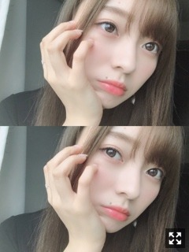
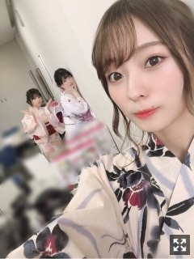
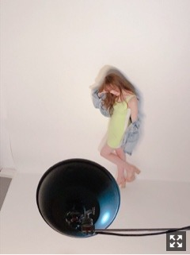

クッションを夏仕様に変えました〜
みなさまこんにちは！！
乃木坂46の
梅澤美波です！

メイク薄めな日です。
マスカラが薄めかな〜
私顔が薄いから
お仕事のときは大体
マスカラ重ね塗りするのですが
最近新しいマスカラに出会って
この日はそれを一度塗り。
ロングタイプなので
ボリュームはそこまでですが
一度ですごく伸びました、
だいぶ前になってしまいましたが
札幌コレクションに
出演させて頂きました！！
VANSさんのステージ！
新内さんと未央奈さんと
すごく楽しく歩けました❤︎
美味しい海鮮料理も食べれました❤︎
そしてそして
先日のGirlsAward！！
浴衣を着てGRLさんのステージを
歩かせて頂きました〜！
実はもう浴衣今年２回目︎︎︎︎✌︎
はやすぎてびっくりしてる
何回着ても浴衣はええなあと思いますねえ
今年はプライベートでも浴衣着たいなあ〜
毎年恒例になっております、
個握では着るつもりなのでお楽しみに〜
大人っぽい白地の❤︎
どタイプでした〜

後ろに天使が2名おる
ananさんでの美脚特集の
オフショット︎︎︎︎✌︎︎︎︎︎✌︎

体のラインがめちゃくちゃ見える
ぴったり衣装だったので
少し緊張しましたが撮影楽しかった〜
ネオンカラーがとても可愛いのです
呼んでいただけて
とっても嬉しかったです❤︎
そして現在発売中、 「blt graph.」にて
表紙を務めさせていただいております！
初登場なのですが
拝見したことは何度もありまして
雰囲気もなにもかも好きだったので
物凄く嬉しく幸せです(；；)
私で務まるのかと不安でしたが
撮影はかなり楽しく
色んな表情を撮っていただけたと思います。
インタビューも、
色々お話させて頂きました
たくさんの方の手に届きますように。
そして未央奈さんと与田と
サッカーの新CMに出演させて頂いております！
カラフルなパンツを履いて
ボールと戯れております。
撮影もダンスしたり
ボール蹴るアクションして撮影したり
アクティブで物凄く楽しかったです！
ぜひご覧下さい！
お知らせ◎
〜雑誌
▽「アップトゥボーイ」
▽「BOMB」
▽「blt graph.」
発売中です！
▽５／２４「FLASH スペシャル」
ラジオ特集にて、乃木坂46の「の」についてお話させて頂いています！
▽５／２８ 「with」
今回も可愛すぎる衣装でした〜
毎回新鮮な髪型やお洋服を着れて
楽しくて仕方がないです❤︎
▽６／１３「週刊少年チャンピオン」
約1年前に初表紙を飾らせて頂いた
週刊少年チャンピオン様。
またまた表紙を務めさせていただきます！！
嬉しい〜(；；)
夏を先取りしてきました！
私の好きな音楽をかけてくださったり
約1年ぶりのスタッフさんたちと
最高に楽しく撮影してきました︎︎︎︎✌︎
お楽しみに！！
〜ラジオ
▽５／２６ 「乃木坂46の『の』」
(文化放送 18:00~18:30)
玲香さん、新内さんとです！
楽しすぎて一瞬で終わりました、、是非聴いてください！
▽５／２７ 「レコメン！」
(文化放送 22:00~25:00)
楓と出演させて頂きます！
〜TV
▽５／２４ 「H♪LINE」
(広島ホームテレビ 25:25~)
▽５／２５ 「MUSIC FAIR」
(フジテレビ 18:00~18:30)
▽５／２５ 「COUNT DOWN TV」
(TBS系 24:58~26:08)
▽５／２９ 「ミュージック・ジャパンTV『乃木坂スペシャル』」(21:00~21:30)
▽６／１４ 「ミュージック・ジャパンTV『アイドル大好き！ギュギュッと アイドル☆最強ランキング』」(22:00~22:30)
▽６／８ 「Sing Out！」個別握手会@夢メッセみやぎ
▽６／３０ 「Sing Out！」個別握手会@東京ビッグサイト
〜DVD
▽５／３１ 舞台「ザンビ」Blu-Ray & DVD-BOX
載せたい写真いっぱいで
困っちゃいますね〜。
オフショットやらたまっているので
少しずつ載せますね◎
小さい頃苦手だった
フレンチトースト、
今はものすごく大好きなんです〜
今日の朝もフレンチトースト作って食べました
好みって変わるものですね
大好きないちごとバナナ乗っけて
メイプルシロップかけて食べた〜
この朝食を楽しみに
私は昨日眠ったのです。ふふふ
大体寝る時は
次の日の朝ごはんのことで頭いっぱいなのです
最近はお料理出来る日はするようにしてます、
自分の作ったもの食べると
母のご飯が食べたくなって仕方ないです( '-' )
バイトルさんの新CMに
出演させて頂いております！
私はファミレス編。
飛鳥さんとファミレスに行き、
白石さん演じる凄技ウエイトレスさんに圧倒されております

お花もいただいて、本当に嬉しいです
観ていただけましたか？
ヘイ！
お知らせ中心になってしまいすみません、、
今日はこの辺で！
おやすみなさい。
また！
一人分のご飯を作るのが難しいので
次の日も同じメニューになりがちですよね〜
あるあるなのかなあ
Original：https://www.nogizaka46.com/s/n46/diary/detail/50802?ima=4944&cd=MEMBER